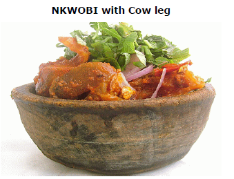

DESCRIPTION
This is a traditional native sauce, served in a traditional bowl mostly from the eastern part of Nigeria.
INGREDIENTS
- 1 Cow leg
- 1 cooking spoon of Palm oil
- 1 whole Onions
- Few Soft Ugba(optional)
- 35g Garden egg vegetable, Utazi or spinach leaf
- Potassium salt
- Seasoning (Maggi, salt, curry, thyme)
- 10g Boiled Pomo (cow skin)
- ½ oz Cray fish (optional)
STEPS
-
STEP 1: Dissect the cow leg into 2 then slice and remove the bones.
-
STEP 2: Boil the cow leg and slice a half onions into 4 pieces to soften fast with a pinch of salt to taste (seasoning) cook
for 45 minutes.
-
STEP 3: Add a cooking spoon of palm oil in a pot, sprinkle very tiny potassium salt, mix it with warm water, stir all together until when the potassium melts and the sauce becomes thicken, add pounded or dry chilli pepper with seasoning.
-
STEP 4: Add the boiled skin cow (Pomo), a bit of Cray fish.
-
STEP 5: Check the cow leg, if softened, drain out the water, and put the meat in bowl.
-
STEP 6: Add all the sauce and ingredients together then stir. Do not add seasoning.
-
STEP 7: Add all the sauce and ingredients together then stir. Do not add seasoning.
-
STEP 8: Add all the sauce and ingredients together then stir. Do not add seasoning.
Home